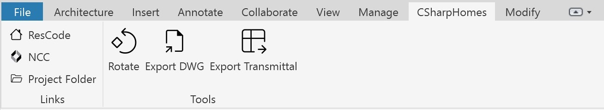
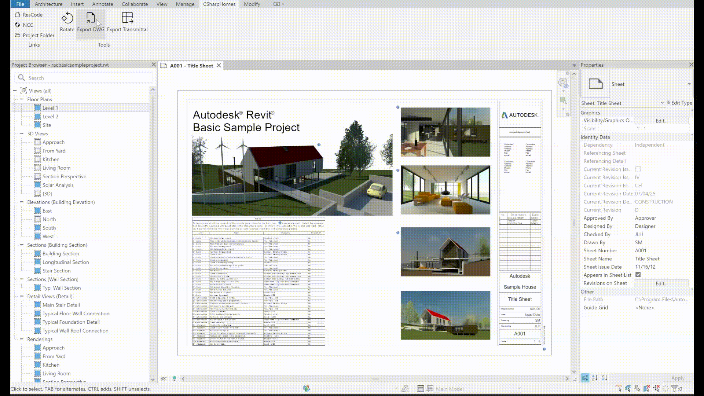
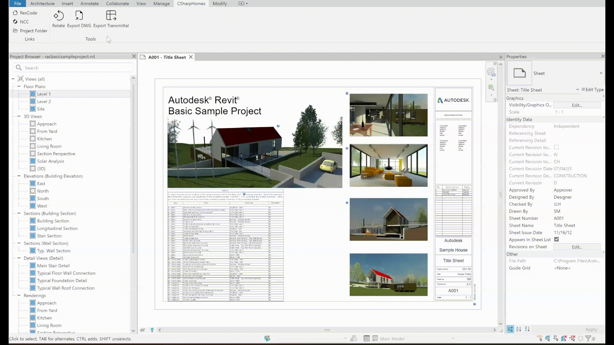

CSharpHomes Revit Add-in

Features
Links Panel
- ResCode – Opens the Victorian Residential Development Code in your default browser.
- NCC – Opens the National Construction Code (NCC) 2022 edition in your default browser.
- Project Folder – Opens the directory containing the current Revit project file in Windows Explorer.
Tools Panel
- Rotate – Rotates selected elements in the active view by a user-specified angle.
- Prompts for element selection and angle input via a custom options bar.
- Applies rotation around the vertical axis at the element’s center.

- Export DWG – Exports selected sheets to DWG format.
- Select the sheets you want to export.
- Choose the export directory when prompted.
- The add-in exports the sheets using company standards.
- After export, the destination folder automatically opens for you.

- Export Transmittal – Generates a document transmittal Excel file summarizing selected sheets and their revisions.
- Select the sheets and revisions you want to include in the transmittal.
- Choose the directory to save the Excel file.
- The add-in creates or updates the transmittal file with:
- Sheet numbers and names
- Current revision
- Revision history
